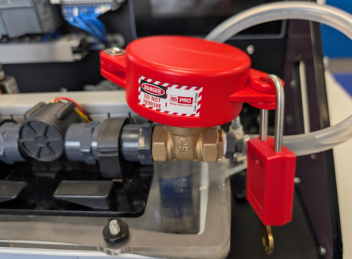

Lockout Tagout (LOTO) is a safety procedure used to ensure equipment is properly isolated before maintenance or inspection. Locking off a valve prevents flow through the system, for example when removing a pipe downstream of the valve. This worksheet helps you understand how proper isolation protects people and equipment when working on a PLC controlled closed loop system.

Close the valve by rotating it fully clockwise.
Place the LOTO cover for the valve around the valve.
Open the padlock and place the padlock through the two holes to lock the cover in place. Lock the padlock and remove the key.
The system will attempt to run but should eventually shut off due to no flow. With the key kept on your person, it is safe to remove components downstream of the locked valve.
Lockout Tagout is used in industry to prevent the release of hazardous energy during maintenance. By locking off a valve, you physically stop flow in the process and ensure that downstream pipework or components can be safely removed without unexpected fluid movement.
Even if a PLC commands the system to run, the locked valve prevents flow, creating a controlled and safe condition. This demonstrates that physical isolation is essential and should not rely on software control alone.
Keeping the key with the person performing the work ensures that only they can remove the lock, preventing accidental re-energisation. Keep the key with you at all times, your life may depend on it.
Use this simple simulation to complete Lock Out Tag Out in the correct order.